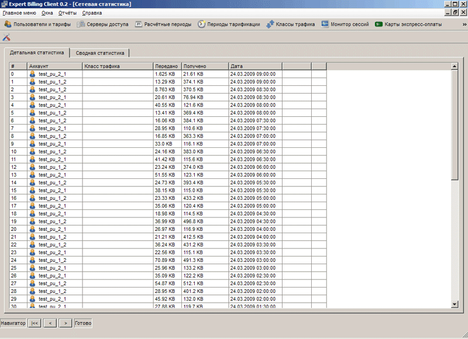
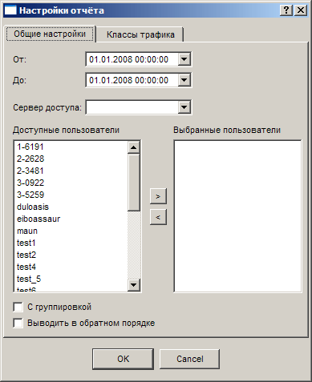
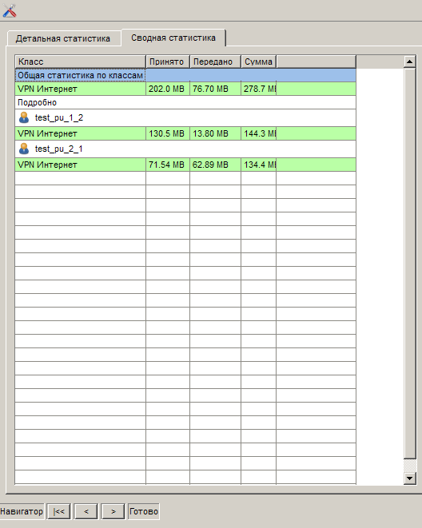

|
Интерфейс и логика |
Top Previous Next |
|
Раздел «Сетевая статистика» открывается только
– кнопкой на панели управления;
Главное окно раздел составляет таблица с информацией о сессиях с двумя закладками («Детальная статистика» и «Сводная статистика»), единственная кнопка на панели управления («Конфигурация») и навигационная панель для перехода между страницами результатов.

Управление статистикой производится в окне «Настройки отчета», вызываемом по нажатию кнопки «Конфигурация». Окно составляют вкладки «Общие настройки» и «Классы трафика». Основная вкладка («Общие настройки») позволяет выбрать необходимый временной диапазон (календарные поля «От» и «До», список серверов доступа (если не указан, то статистика берется по всем серверам) и пользователей (слева общий список, справа – пользователи, по которым будет выдаваться статистика. На последней вкладке выбирается один либо несколько учитывающихся в статистике классов трафика. Слева – весь список, справа – выбранные.

При избытке результатов на одной странице необходимо воспользоваться навигационной панелью снизу: кнопка « |<< » – возврат на первую страницу, « < » – предыдущая страница, « > » – следующая страница.
Для сводной информации (закладка «Детальная статистика») выводится порядковый номер сеанса, аккаунт, класс трафика, объем переданной и полученной информации, а также дата и время начала сеанса.
Установленный флажок «С группировкой» группирует похожие данные по классу трафика, а установка флажка
Для общей информации (закладка «Сводная статистика») по каждому выбранному классу приводятся объемы принятого и переданного трафика, а также суммарный объем трафика по всем пользователям за выбранный период.

Обратите внимание: для каждого типа статистики (полная или сводная) необходимо конфигурировать параметры по-отдельности – для этого нужно либо зайти в окно «Настройки отчета», либо нажать кнопку «Конфигурировать». This help file was created with an unregistered evaluation copy of Help & Manual. © EC Software. All rights reserved. This message will not appear if you compile this help file with the registered version of Help & Manual. |